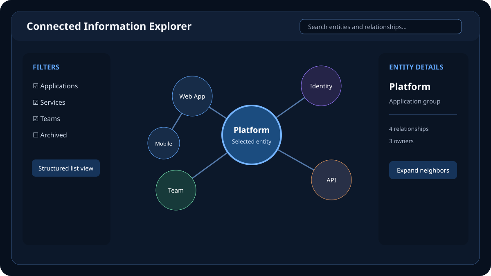

Technologies used
- Angular and TypeScript
- RxJS and NgRx
- SVG or Canvas rendering adapter
- REST or GraphQL data services
- Web Workers for expensive layout work
- Automated accessibility and component tests
Data-rich interface case study
An Angular interaction architecture that helps users find entities, understand relationships and investigate connected information without losing context.

This exploration defined a maintainable frontend for navigating a graph of entities and relationships. The interface combined search, filters, a visual canvas and a synchronized details panel. Users could begin with a known entity, expand only relevant relationships and return to earlier investigation states.
The goal was not to place every node on one canvas. It was to translate a complex connected dataset into a guided, explainable workflow that remained useful on smaller screens and to people who do not use a pointing device.
Dense graph visualizations quickly become unreadable. Rendering thousands of elements hurts performance, while relying on spatial position alone excludes keyboard and assistive-technology users. Investigation workflows also fail when selecting a new node destroys the context that led to it.
The product needed progressive discovery, stable navigation history and a clear separation between domain data, UI state and the chosen rendering library.
Entities and relationships were stored by identifier rather than duplicated inside nested view models. Separate state represented the current selection, filters, expanded neighborhoods and history. Selectors derived the visible subgraph, keeping the rendering layer focused on presentation.
An adapter translated typed domain models into renderer-specific nodes and edges. Angular components did not depend directly on one graph library. This boundary made it possible to compare SVG and Canvas approaches, test transformation logic independently and change rendering technology without rewriting domain workflows.
The first response returned a focused neighborhood rather than the complete graph. Expansion fetched only the selected relationship set, cached previous results and cancelled stale requests through RxJS. Expensive layout work could move to a Web Worker so the main thread remained responsive.
A synchronized structured list exposed the same entities and relationships as the canvas. Keyboard commands moved selection, the details heading received focus after an explicit open action, and color was never the only carrier of relationship meaning.
Challenge: Too many simultaneous nodes obscured useful relationships.
Solution: Neighborhood limits, relationship filters, clustering and deliberate expand actions kept the initial view understandable.
Challenge: Layout calculations and DOM updates could make interaction sluggish.
Solution: Rendering budgets, batched updates, memoized selectors and worker-based layout protected interaction responsiveness.
Challenge: A spatial canvas has little inherent semantic structure.
Solution: The list view, descriptive relationship text, predictable focus and full keyboard operations exposed an equivalent investigation path.
The architecture established concrete validation criteria while avoiding invented production claims:
A production implementation would measure task completion, time to identify a relevant relationship, interaction latency, layout duration, error recovery and accessibility test coverage.